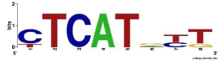

|

|
GAMI: genetic algorithms for motif inference
Synopsis: In this project, we develop computational tools to infer
regulatory regions in noncoding DNA, based on conservation over
evolutionary time, and including biochemical data from
the ENCODE project.
Current and recent collaborators: Leif Oxburgh, Carol Kim, Jim Coffman
Current staff and students: Craig Lessard, Sam McFarland, Brenna Gardner,
Naomi Heuer, Amanda Castonguay, Ben Congdon-Jones
- With Carol Kim's lab at the University of Maine, we have
computationally identified regulatory elements for CFTR, the gene
responsible for cystic fibrosis, and completed preliminary biological
validations of these.
- With Jim Coffman's lab at the Mount Desert Island Biological Lab,
we have computationally identified regulatory regions for FOXJ1, a
gene important in cilia development, and completed preliminary
biological validations of these.
- With Leif Oxburgh's lab at the Maine Medical Center Research
Institute, we have computationally identified regulatory regions for
PDGFRb, a gene critical to kidney development, and completed
preliminary biological validations of these.
|
|
GPS: Genome Pattern Scan
Synopsis: In this project, we develop computational tools that identify
genes that might be influenced by specific regulatory factors (specified
by the user).
Collaborators: Leif Oxburgh, Mary Ann Asson-Batres
Staff and students: Sam McFarland, Craig Lessard, Jen Fetting
- With Leif Oxburgh's lab at the Maine Medical Center Research
Institute, we are working to identify genes that might be regulated by
FOXD1.
- With Mary Ann Asson-Batres of Tennessee State University and Doug
Sawyer of the Maine Medical Center Research Institute, we are working
to identify genes that might be regulated by the presence of Vitamin A.
|